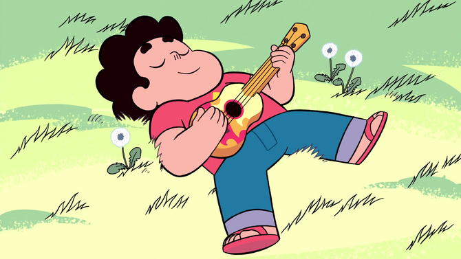

Sinopse:
Steven Universe se passa na cidade fictícia de
Beach City, na costa leste americana.
As Crystal Gems vivem em um antigo templo à beira-mar e protegem a
humanidade de gems corrompidas e outras ameaças.
As Gems são uma raça guerreira alienígena de pedras mágicas quase
imortais lideradas por 4 Gens chamadas de Diamantes
(as Gens tem o nome de suas pedras). As Gens possuem diversos
poderes; vários tipos de pedras diferentes que definem seu trabalho,
poderes e posição social. Como são inorgânicas não envelhecem,
não precisão de ar, água, comida e geralmente dormem muito pouco,
mas precisam ser fabricadas usando minerais, isso destrói os
planetas colonizados por elas. Suas pedras projetam formas
humanóides coloridas e que são geralmente femininas e sem orelhas.
As Crystal Gems são Gens que decidiram impedir que a Diamante
Rosa destruísse a natureza da Terra, Steven é um garoto meio
Gen meio humano que herdou sua pedra preciosa de sua mãe, a
ex-líder das Crystal Gems.
Criadora: Rebecca Sugar
Primeiro episódio: 21 de maio de 2013
Adaptações: Steven Universo: O filme (2019)
Gêneros: Ação, Fantasia Científica, Comédia Dramatica
| Temporada | Episódios | Temporada | Episódios |
| Temporada 1 | Steven universo:Futuro | ||
| Temporada 2 | |||
| Temporada 3 | |||
| Temporada 4 | |||
| Temporada 5 |
